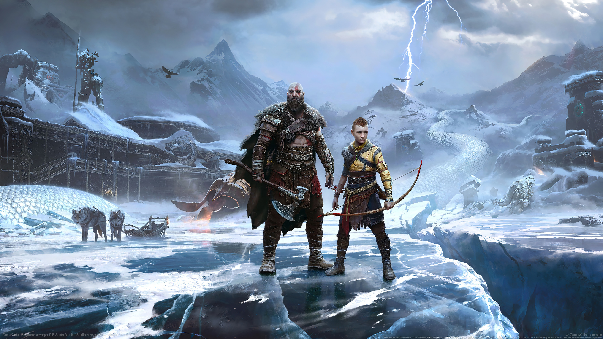

Juegos más esperados del 2022.
Al pulsar a las imǵanes se te redirigirá al tráiler.
God Of War Ragnarok
God of War: Ragnarok es la secuela del aclamado God of War (2018) y presenta un videojuego de acción y aventura de gran factura donde Kratos y Atreus deben viajar a cada uno de los Nueve Reinos que tanto echábamos de menos en el juego anterior, en busca de respuestas mientras las fuerzas asgardianas se preparan para la batalla profetizada que supondrá el fin del mundo.
Elden Ring
El juego nos insta a explorar un mapa grande y variado para descubrir todos los secretos que ocultan las Tierras Intermedias y descubrir cuál es el destino del misterioso Círculo de Elden.

The Last of Us: Parte I
Videojuego de acción y aventura que trae de vuelta a PC y PS5 el aclamado título de Naughty Dog estrenado en PS3.